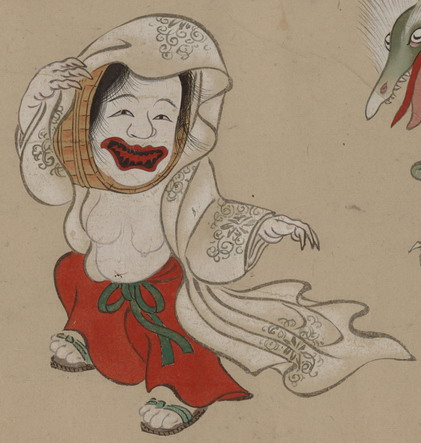

盥の化物。頭部が盥に覆われている。赤い紅をつけた大きな口を開け、お歯黒をした歯を覗かせている。模様の入った白い着物を頭からかぶっているが、乳房や腹は露わになっている。下半身には赤い衣をまとっている。
出典：親書誌：U426_nichibunken_0154：妖怪絵巻；ヨウカイエマキ／日付：2010／資源識別子：U426_nichibunken_0154_0058_0000
Copyright (c)2010- International Research Center for Japanese Studies, Kyoto, Japan. All rights reserved.